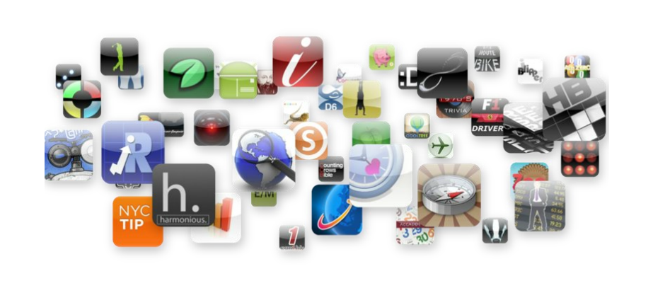

PhoneGap
PhoneGap is an HTML5 app platform that allows you to author native applications with web technologies and get access to APIs and app stores. PhoneGap leverages web technologies developers already know best... HTML and JavaScript.
MIT/BSD/APACHE
HTML + CSS + JavaScript

Native APIs

Cross Platform
支持不同分辨率的设备
Viewport
Media Query
Viewport

Media Query

HTML5
Canvas, Audio, Video, Cache Manifest,
PostMessage, Web Sql,
Drag and drop, LocalStorage,
File Api, Sockets, History Api,
Workers
CSS3
Opacity, Rounded, Corners,
Graients, Drop Shadow
JavaScript
JQuery Mobile
Sencha
...
性能
用CSS的Transforms
不要在循环中设定样式
Don't do what you do on the web!
我们可以使用的APIs
我们还能做什么
Extend PhoneGap
Do what you want!!
Plugins
Push notifications
Ads
Analytics
Barcode Scanning
Facebook Connect
使用状况

Demo